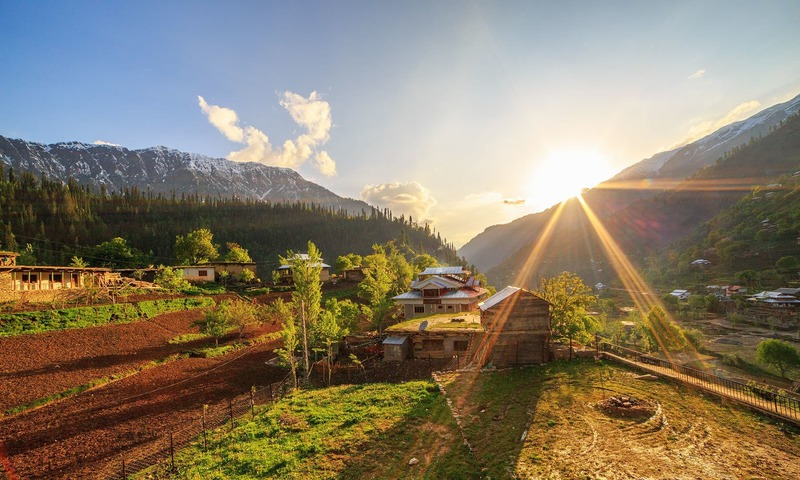

3 Pakistani tourist spots you must visit in 2021
With a world full of fascinating destinations, choosing the perfect vacation spot can present a challenge. That's why U.S. News used expert opinions, reader votes and current trends – and evaluated sights, cultures, scenic beauty, food scenes and more – to compile this list of the world's best places to visit. Use these recommendations to craft your travel bucket list, and cast your vote below to help us determine next year's list. To fuel your wanderlust even more, take a photo tour of the World's Best Places to Visit. (Note: Some of the below destinations may be affected by the coronavirus outbreak. Check with the CDC and the U.S. Department of State before traveling.)
1. Neelum Valley, Azad Kashmir
Opposite to the Keran sector of Indian-held Kashmir. From the Chella Bandi Bridge – just north of Azaad Kashmir’s capital Muzaffarabad – to Tau Butt, a valley stretches out for 240 kilometres; it is known as the Neelum Valley (literally, the Blue Gem Valley). Neelum is one of the most beautiful valleys of Azaad Kashmir, and it hosts several brooks, freshwater streams, forests, lush green mountains, and a river. Here, you see cataracts falling down the mountains; their milky-white waters flowing over the roads and splashing against the rocks, before commingling with the muddy waters of River Neelum.

2. Shangrila resort, Skardu
In the extreme north of Pakistan, Skardu the central valley of Gilgit-Baltistan, is an epitome of beauty, serenity and wilderness. After Jaglot on the Karakoram Highway, a narrow road turns towards Skardu. During the seven-hour journey, one is greeted with several streams, springs, and the hospitality of the local people. After crossing the old wooden bridge built over the River Indus, one reaches Shangrila, a paradise on earth for tourists. It is a famous tourist spot in Skardu, which is about 25 minutes away by drive. Restaurant in Shangrila rest house is highlight of this place, which is built in the structure of an aircraft.
3. Gojal Valley
The Gojal Valley borders China and Afghanistan, with its border meeting the Chinese border at Khunjerab — 15,397 feet above sea level — and remains covered with snow all year long. In the north west, there is Chiporsun, whose border touches the Wakhan region of Afghanistan. Wakhan is about six square miles in area, after which starts Tajikistan. The Karakoram Highway which connects Pakistan to China also passes through Gojal Valley and enters China at Khunjerab.